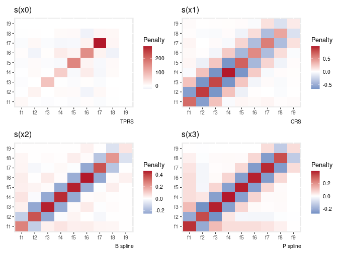
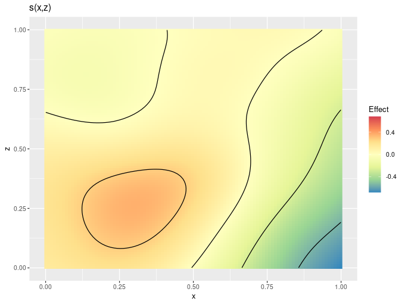
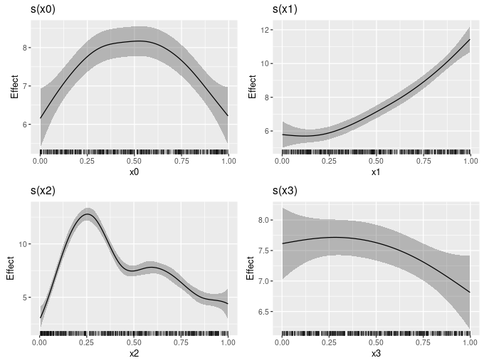

Two new versions of gratia released
While the Covid-19 pandemic and teaching a new course in the fall put paid to most of my development time last year, some time off work this January allowed me time to work on gratia 📦 again. I released 0.5.0 to CRAN in part to fix an issue with tests not running on the new M1 chips from Apple because I wasn’t using vdiffr 📦 conditionally. Version 0.5.1 followed shortly thereafter as I’d messed up an argument name in smooth_estimates(), a new function that I hope will allow development to proceed more quickly and mke it easier to maintain code and extend functionality to cover a greater range of model types. Read on to fin out more about smooth_estimates() and what else was in these two releases.
Evaluating smooths with smooth_estimates()
For a while now I’ve realised that the way I’d implemented evaluate_smooth() wasn’t great. Some design decisions I took earlier on added a lot of unnecessary complexity to the function through handling of factor by smooths, and which didn’t really work properly in the context of a GAM where the same variable could be in multiple smooth terms.
My original plan was to use a facetted plot for factor by variable smooths, and so when you selected a model term (more on that later), if that term was a factor by smooth, instead of just pulling in a single smooth, I would pull in all of the smooths associated with the factor by. Handling this got complicated and resulted in some kludgy, messy code that was prone to failure when used with a more specialised smooth or a more complex model.
Additionally, how I initially implemented selection of model terms was a bit silly; a user could pass a string for a variable that would be matched against the labels that mgcv 📦 uses for smooth. Any instance of the term in any smooth would then get selected, which is not usually what is wanted when working with complex models with multiple smooths, some of which might contin the same variable.
Because of this, in the summer I decided to completely rewrite evaluate_smooth(). Then I realised this would not be a good idea as I was going to break a lot of existing code, including code we’d written in support of papers that had been published and which used evaluate_smooth(). Instead, I decided to start from a clean slate with a new function that didn’t do any of the silly things I’d messed up evaluate_smooth() with, and which would be much simpler to maintain and develop for a wider range of complex distributional models.
In writing smooth_estimates() I also came up with a standard way to represent all evaluations of a smooth, regardless of type. The nice thing about this is that it’s easy to return a tibble containing all the values of the evaluated smooth for many smooths at once, something you couldn’t do with evaluate_smooth().
The idea behind evaluate_smooth() and smooth_estimates() is to return a tibble of values of the smooth evaluated at a grid of n points over each of the covariates involved in that smooth.
library('mgcv')
library('gratia')
library('dplyr')
library('tidyr')
dat <- data_sim("eg1", seed = 42)
gam_model <- gam(y ~ s(x0) + s(x1, bs = "cr") + s(x2, bs = "bs") + s(x3, bs = "ps"),
data = dat, method = "REML")
smooth_estimates(gam_model)# A tibble: 400 x 9
smooth type by est se x0 x1 x2 x3
<chr> <chr> <chr> <dbl> <dbl> <dbl> <dbl> <dbl> <dbl>
1 s(x0) TPRS NA -1.34 0.392 0.000239 NA NA NA
2 s(x0) TPRS NA -1.26 0.366 0.0103 NA NA NA
3 s(x0) TPRS NA -1.19 0.342 0.0204 NA NA NA
4 s(x0) TPRS NA -1.11 0.319 0.0304 NA NA NA
5 s(x0) TPRS NA -1.03 0.298 0.0405 NA NA NA
6 s(x0) TPRS NA -0.956 0.280 0.0506 NA NA NA
7 s(x0) TPRS NA -0.881 0.264 0.0606 NA NA NA
8 s(x0) TPRS NA -0.806 0.250 0.0707 NA NA NA
9 s(x0) TPRS NA -0.733 0.238 0.0807 NA NA NA
10 s(x0) TPRS NA -0.661 0.229 0.0908 NA NA NA
# … with 390 more rows
This seems a little wasteful — all those NA columns 😱 — but the output is a consistent wa to represent smooths, regardless of the number of covariates etc.
I’m toying with returning the tibble in a nested fashion with nest(), something like
sm <- smooth_estimates(gam_model) %>%
nest(values = c(est, se), data = starts_with('x'))
sm# A tibble: 4 x 5
smooth type by values data
<chr> <chr> <chr> <list> <list>
1 s(x0) TPRS NA <tibble [100 × 2]> <tibble [100 × 4]>
2 s(x1) CRS NA <tibble [100 × 2]> <tibble [100 × 4]>
3 s(x2) B spline NA <tibble [100 × 2]> <tibble [100 × 4]>
4 s(x3) P spline NA <tibble [100 × 2]> <tibble [100 × 4]>
which I think is much neater, but does require extra steps from the user to just use the output
sm %>%
unnest(cols = c(values, data)) # A tibble: 400 x 9
smooth type by est se x0 x1 x2 x3
<chr> <chr> <chr> <dbl> <dbl> <dbl> <dbl> <dbl> <dbl>
1 s(x0) TPRS NA -1.34 0.392 0.000239 NA NA NA
2 s(x0) TPRS NA -1.26 0.366 0.0103 NA NA NA
3 s(x0) TPRS NA -1.19 0.342 0.0204 NA NA NA
4 s(x0) TPRS NA -1.11 0.319 0.0304 NA NA NA
5 s(x0) TPRS NA -1.03 0.298 0.0405 NA NA NA
6 s(x0) TPRS NA -0.956 0.280 0.0506 NA NA NA
7 s(x0) TPRS NA -0.881 0.264 0.0606 NA NA NA
8 s(x0) TPRS NA -0.806 0.250 0.0707 NA NA NA
9 s(x0) TPRS NA -0.733 0.238 0.0807 NA NA NA
10 s(x0) TPRS NA -0.661 0.229 0.0908 NA NA NA
# … with 390 more rows
Internally, the individual smooths are nested by default as that makes it easy to join the tibbles for multiple smooth together. As such, the unnested-ness of the current behaviour requires an explicit extra step within smooth_estimates().
If you have thoughts about this, let me know in the comments below.
smooth_estimates() is going to supersede evaluate_smooth(), and currently it can handle pretty much everything that evaluate_smooth() can do. That doesn’t mean evaluate_smooth() is going anywhere; as I mentioned above, I don’t want to break old code, so as log as it doesn’t take too much time to maintain evaluate_smooth() isn’t hurting anyone if I put it out to pasture.
Version 0.5.0 introduced smooth_estimates() which could only handle very simple univariate smooths, but version 0.5.1 expanded those capabilities. There are a few special smooths that I haven’t yet added capabilities for, including Markov random field smooths and soap film smooths. Support for those will be added by the time version 0.6.0 hits CRAN later this year.
Partial residuals
Version 0.4.0 introduced the ability to add partial residuals to plots of smooths. Version 0.5.0 exposes this functionality for computing partial residuals via new function partial_residuals()
partial_residuals(gam_model)# A tibble: 400 x 4
`s(x0)` `s(x1)` `s(x2)` `s(x3)`
<dbl> <dbl> <dbl> <dbl>
1 -0.236 -1.20 -2.19 0.730
2 0.00545 0.640 -1.79 1.10
3 1.58 1.66 5.59 1.13
4 -1.24 -1.83 -0.892 -0.783
5 -2.21 -0.100 -2.71 -3.10
6 1.27 -1.20 3.93 0.0835
7 -0.599 2.94 -0.793 -1.10
8 1.59 0.402 7.04 2.09
9 2.74 0.449 7.33 2.45
10 1.11 -0.263 0.730 0.703
# … with 390 more rows
The names are currently non-standard — hence all the backticks — and I might change that if I can think of a short hand way to refer to smooths that still allows referencing them uniquely when there are things like factor by smooths involved.
I also added an add_partial_residuals(), to add the partial residuals to an existing data frame
dat %>%
add_partial_residuals(model = gam_model)# A tibble: 400 x 14
y x0 x1 x2 x3 f f0 f1 f2 f3 `s(x0)`
<dbl> <dbl> <dbl> <dbl> <dbl> <dbl> <dbl> <dbl> <dbl> <dbl> <dbl>
1 2.99 0.915 0.0227 0.909 0.402 1.62 0.529 1.05 0.0397 0 -0.236
2 4.70 0.937 0.513 0.900 0.432 3.25 0.393 2.79 0.0630 0 0.00545
3 13.9 0.286 0.631 0.192 0.664 13.5 1.57 3.53 8.41 0 1.58
4 5.71 0.830 0.419 0.532 0.182 6.12 1.02 2.31 2.79 0 -1.24
5 7.63 0.642 0.879 0.522 0.838 10.4 1.80 5.80 2.76 0 -2.21
6 9.80 0.519 0.108 0.160 0.917 10.4 2.00 1.24 7.18 0 1.27
7 10.4 0.737 0.980 0.520 0.798 11.3 1.47 7.10 2.75 0 -0.599
8 12.8 0.135 0.265 0.225 0.503 11.4 0.821 1.70 8.90 0 1.59
9 13.8 0.657 0.0843 0.282 0.254 11.1 1.76 1.18 8.20 0 2.74
10 7.51 0.705 0.386 0.504 0.667 6.50 1.60 2.16 2.74 0 1.11
# … with 390 more rows, and 3 more variables: `s(x1)` <dbl>, `s(x2)` <dbl>,
# `s(x3)` <dbl>
but since implementing this I am now questioning whether this is a good thing or rather whether the implementation is a good thing; there’s nothing in the code currently to ensure that the data you provided matches the order of the data used to fit the model — caveat emptor!
Penalty matrices
I’ve been adding functions to gratia that will be helpful when teaching GAMs; I added basis() a while back and in the 0.5.1 release I added penalty(), for extracting and tidying penalty matrices of smooths from fitted GAM models.
penalty(gam_model)# A tibble: 324 x 6
smooth type penalty row col value
<chr> <chr> <chr> <chr> <chr> <dbl>
1 s(x0) TPRS s(x0) f1 f1 9.81
2 s(x0) TPRS s(x0) f1 f2 -1.45
3 s(x0) TPRS s(x0) f1 f3 -5.00
4 s(x0) TPRS s(x0) f1 f4 -1.34
5 s(x0) TPRS s(x0) f1 f5 -6.24
6 s(x0) TPRS s(x0) f1 f6 3.90
7 s(x0) TPRS s(x0) f1 f7 -7.74
8 s(x0) TPRS s(x0) f1 f8 -1.79
9 s(x0) TPRS s(x0) f1 f9 0
10 s(x0) TPRS s(x0) f2 f1 -1.45
# … with 314 more rows
There is a draw() method also, to plot the penalty matrix
gam_model %>%
penalty() %>%
draw()
It was pointed out that the way this is plotted is not very intuitive if you’re trying to map the way the penalty matrix is written to what’s shown in the plot — you have to flip the y-axis. This is due to how geom_raster() draws things. I have fixed this, but it’s only fixed in the GitHub version of the package, not a current release version.
Colour scales
draw.gam() and some related draw() methods now allow you to configure the colour scales used to plot GAMs. Available options include discrete_colour, continuous_colour, and continuous_fill, that take a suitable scale allowing you to change the colour scheme used etc:
dat2 <- data_sim("eg2", n = 1000, dist = "normal", scale = 1, seed = 2)
gam_model2 <- gam(y ~ s(x, z, k = 40), data = dat2, method = "REML")
draw(gam_model2, n_contour = 5,
continuous_fill = ggplot2::scale_fill_distiller(palette = "Spectral",
type = "div"))
draw()constant and fun
draw.gam() can now plot smooths after addition of a constant and transformation via a function. This can be used to put smooths (sort of) on the response scale. For example, in the code below, I add the model intercept to each smooth when plotting
b0 <- coef(gam_model)[1]
draw(gam_model, constant = b0)
I plan to add an argument response, which would take a logical to indicate if you wan to plot on the response scale. If response = TRUE, it would override anything passed to constant and fun, such that draw.gam() would just do the right thing, and figure out from the model what constant and inverse link function to use. Watch out for that in 0.6.0.
Excluding or selecting terms to include in model predictions
predict.gam() allows the user to either exclude or specifically include only selected terms in model predictions. Version 0.5.0 added the same functionality in simulate.gam() and predicted_samples(), by allowing you to pass along an exclude or terms argument to predict.gam() that is used in both of these functions.
Summary
All in all, these are not major changes to the functionality of gratia, but the ground work laid in smooth_estimates() should allow me to address lots of the outstanding bugs related to handling complex model and some complex smooth types, and I’m pretty excited about that.
Social